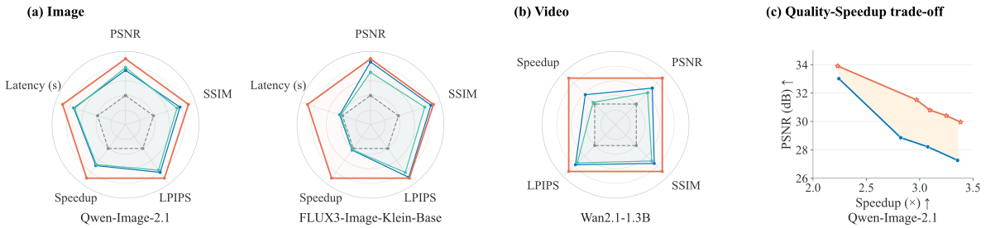

AutoCache: Agent-Designed Caching for Image and Video Generation
AutoCache uses an LLM agent to discover what to measure and when to reuse cached computation. The resulting policies accelerate image and video generation without retraining or runtime LLM calls.
How the agent searches
Backbones and benchmarks
Image generation
Qwen-Image-2.1 and FLUX3-Image-Klein-Base
DrawBench
GenEval 2 · Qwen policy transfer
DrawBench · FLUX3 policy transfer to FLUX.1-dev
Video generation
Wan2.1-T2V-1.3B
VBench
Video comparisons
Image comparisons
Click to zoom in.
Speed and reference fidelity

Frozen-policy transfer
| Method | PSNR ↑ | SSIM ↑ | LPIPS ↓ | Speedup ↑ |
|---|---|---|---|---|
| ECAD Fast | 13.21 | 0.446 | 0.463 | 2.28× |
| TeaCache | 19.90 | 0.755 | 0.162 | 1.91× |
| DPCache | 22.97 | 0.828 | 0.106 | 1.81× |
| SeaCache | 25.74 | 0.877 | 0.070 | 2.28× |
| DiCache | 29.12 | 0.923 | 0.043 | 2.01× |
| AutoCache (Ours) | 31.64 | 0.949 | 0.026 | 1.96× |
| Method | PSNR ↑ | SSIM ↑ | LPIPS ↓ | Speedup ↑ |
|---|---|---|---|---|
| DiCache | 26.82 | 0.887 | 0.112 | 2.77× |
| SeaCache | 25.72 | 0.884 | 0.115 | 2.96× |
| AutoCache (Ours) | 27.50 | 0.906 | 0.091 | 3.02× |